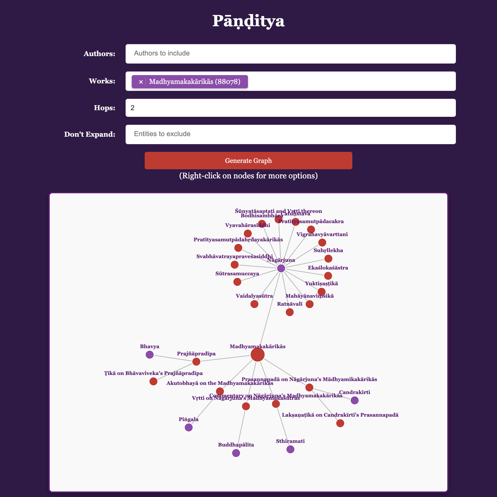
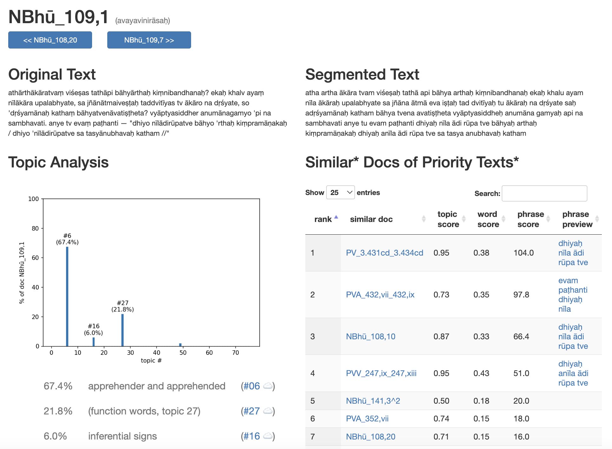
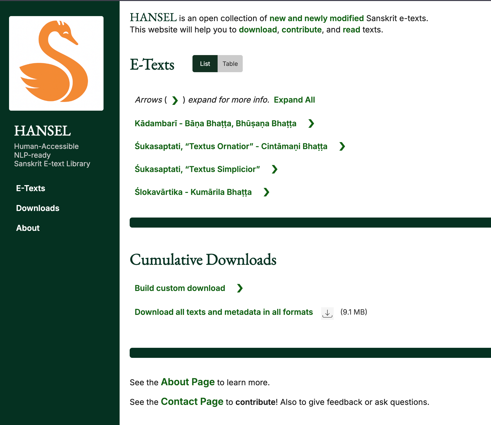
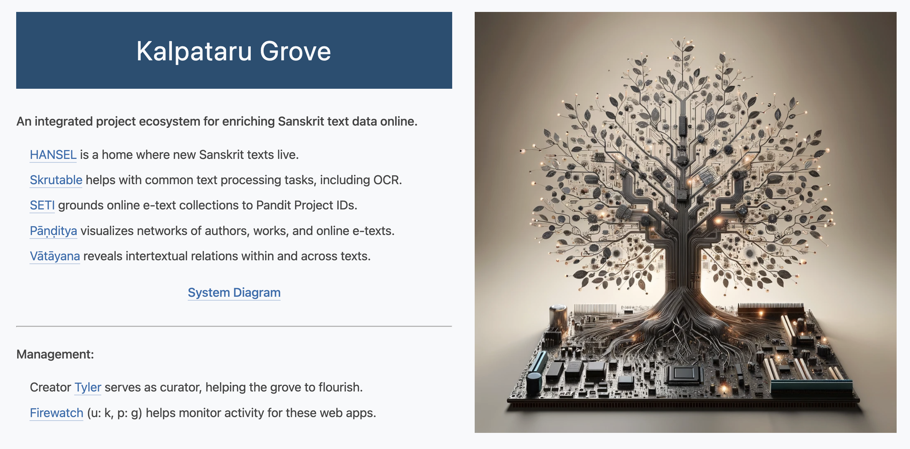

Skrutable
My first and most popular project. I wanted a minimalistic but effective workspace where I could assemble in one place all the Sanskrit text-processing functions that mattered most to me, which have turned out to be transliteration, meter-related calculations, word splitting, and OCR. The features you'll find here are those that have proven useful in my own academic work, like meter-agnostic scansion information. It's powerful enough to apply to large amounts of text at scale, but also flexible enough to use for one-off situations day-to-day.

Pramana NLP
This curated corpus of Sanskrit philosophy texts is my model of simple but informative text digitization for facilitating NLP work. Like my other work, it's open source and licensed under a Creative Commons Attribution-ShareAlike 4.0 International License, so go ahead, take a look, and download it for your own use if you want.

Panditya & SETI
Panditya is a visual exploration tool for Sanskrit intellectual networks. It helps researchers understand connections between scholars, texts, and traditions across the history of Sanskrit literature. SETI (Sanskrit E-Text Index) is a register of Sanskrit electronic texts, helping scholars discover and locate digitized Sanskrit materials across various repositories.

Vatayana
A corpus-based system that reveals intertextual connections between Sanskrit philosophy texts. Built as part of my doctoral research at Leipzig, Vatayana helps identify parallels and quotations across the vast corpus of Sanskrit philosophical literature.

